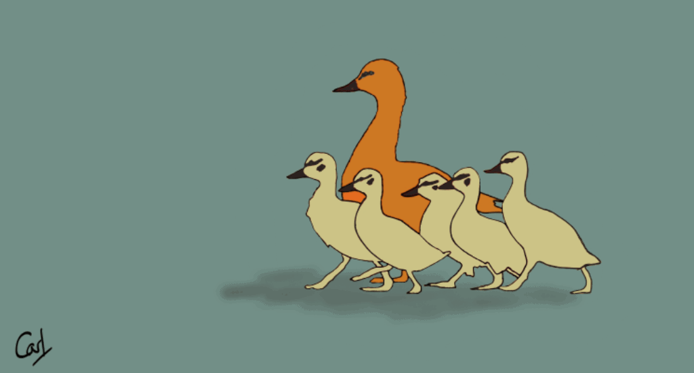
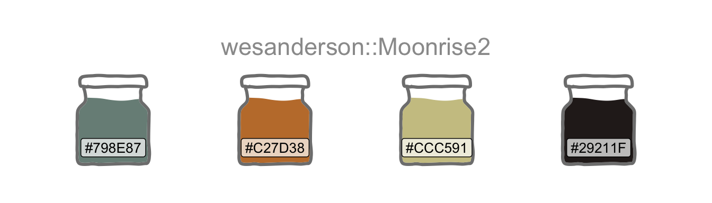
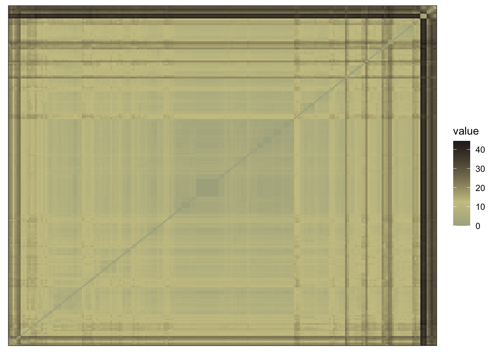
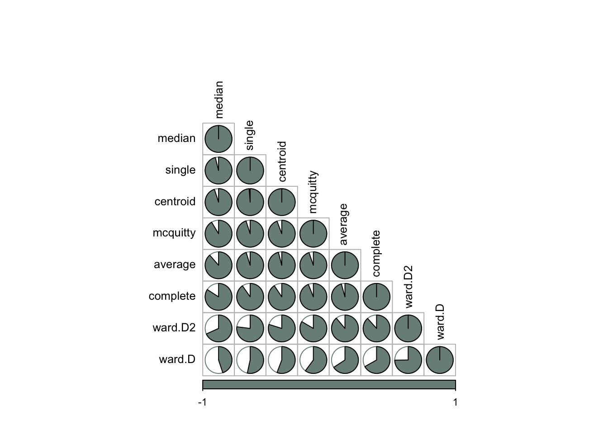
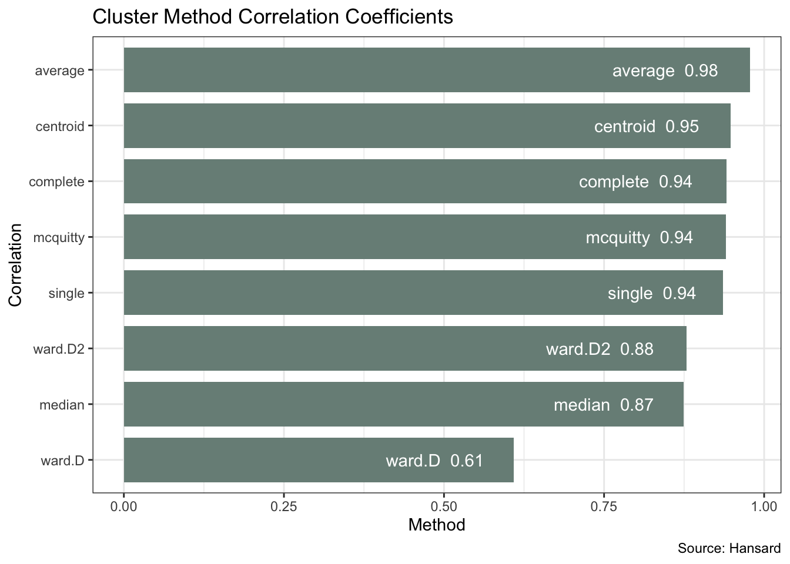
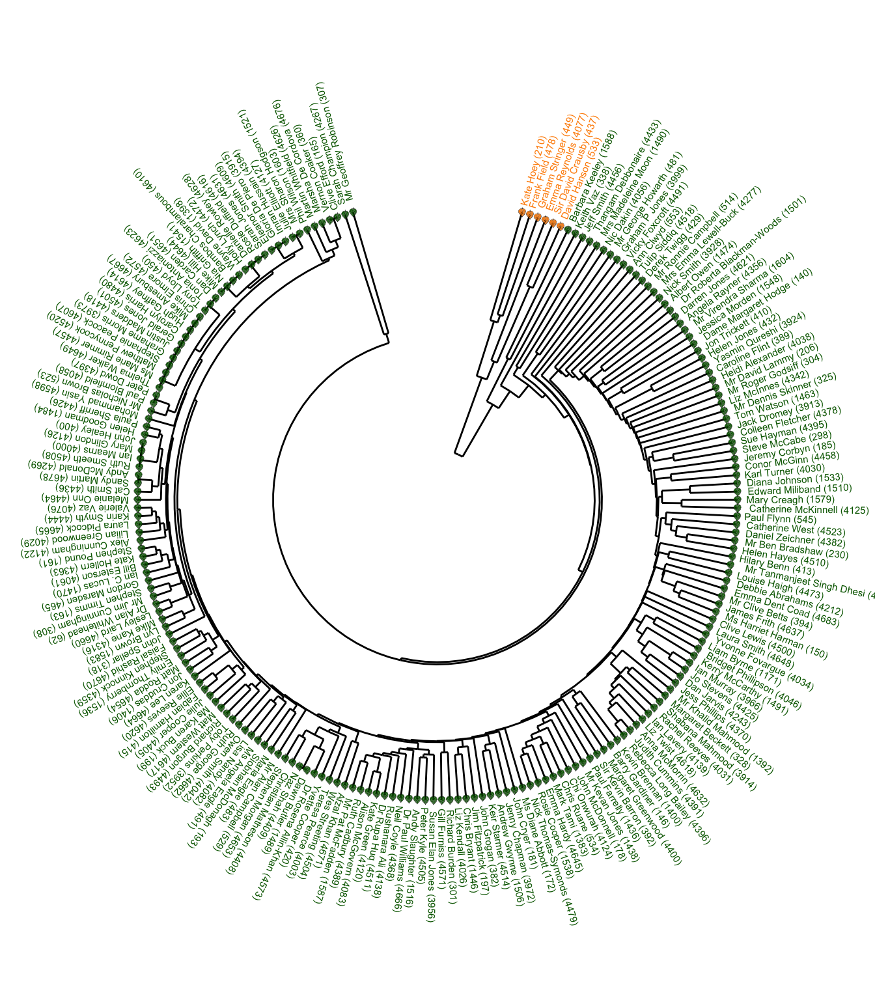
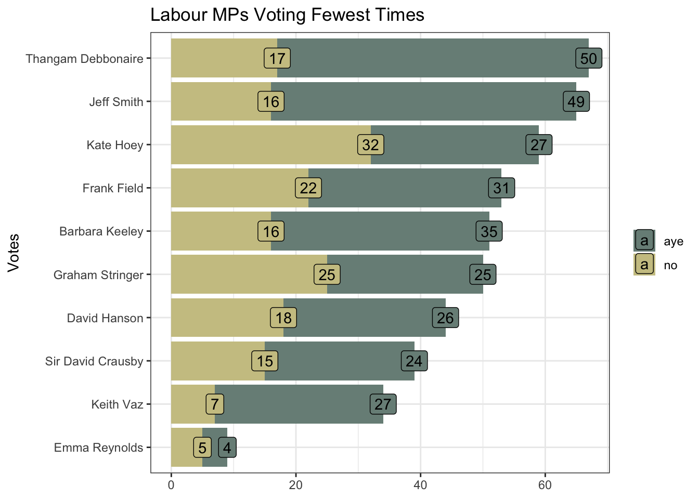
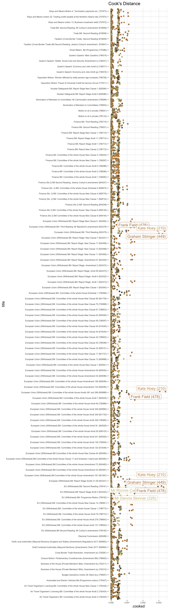
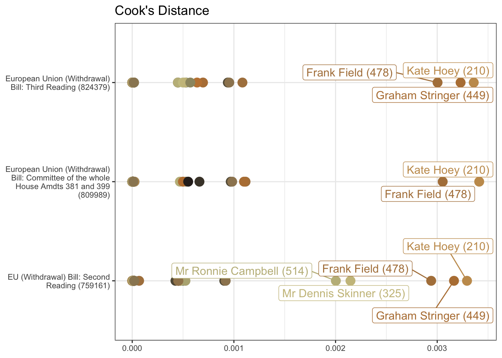

library(conflicted)
library(tidyverse)
conflict_prefer_all("dplyr", quiet = TRUE)
library(clock)
library(hansard)
library(dendextend)
library(ggdendro)
library(corrplot)
library(broom)
library(factoextra)
library(glue)
library(ggrepel)
library(geomtextpath)
library(ggfoundry)
library(paletteer)
library(usedthese)
conflict_scout()Cluster of Six
R
clustering
correlation
Exploring parliamentary voting patterns with hierarchical clustering

Before each vote, the Speaker of the House yells “Division! Clear the Lobby”. I’d like to find which cluster of MPs (Members of Parliament) may be exiting the lobby and going their own way.
Hansard reports what’s said in the UK Parliament, sets out details of divisions, and records decisions taken during a sitting. The R package hansard package (Odell 2017) provides access to the data.
theme_set(theme_bw())
pal_name <- "wesanderson::Moonrise2"
pal <- paletteer_d(pal_name)
display_palette(pal, pal_name)
I’ll start by building a list of all Labour Party MPs.
url_prefix <- "http://data.parliament.uk/members/"
mps <- commons_members() |>
filter(party_value == "Labour" | about == str_c(url_prefix, "478")) |>
mutate(ID = str_replace(about, url_prefix, ""))
saveRDS(mps, file = "mps.rds")Creating a function will enable me to iterate through the MP list to extract their voting records.
start_date <- "2017-06-08"
end_date <- "2018-01-28"
pull_votes <- \(x) {
mp_vote_record(x,
start_date = start_date,
end_date = end_date,
verbose = FALSE
) |>
mutate(mp = x)
}I’ll use it to extract the “aye” and “no” votes. Use of possibly prevents the code from stopping when it encounters former MPs for whom no data is returned.
votes <-
map(mps$ID, possibly(pull_votes, NULL)) |>
compact() |>
map(simplify, "tibbles") |>
list_rbind() |>
rename("lobby" = "vote")
saveRDS(votes, file = "votes.rds")Voting the opposite way to the majority of the party, as well as non-votes, will both be of interest when assessing which MPs are “most distant” from the wider party.
votes_df <- votes |>
left_join(mps, by = join_by(mp == ID)) |>
select(about = about.x, title, date_value,
lobby, mp, name = full_name_value) |>
transmute(
vote = if_else(lobby == "aye", 1, -1),
mp = str_c(name, " (", mp, ")"),
about = str_replace(about, "http://data.parliament.uk/resources/", ""),
title = str_c(title, " (", about, ")")
) |>
select(-about) |>
pivot_wider(names_from = title, values_from = vote, values_fill = 0)The data are standardised (i.e. scaled) to ensure comparability. This is verified by ensuring the mean and standard deviation are close to zero and one respectively.
scaled_df <-
votes_df |>
mutate(across(-mp, scale))
scaled_df |>
summarise(across(-mp, list(mean = mean, sd = sd))) |>
summarise(
sd_min = min(pick(ends_with("_sd"))),
sd_max = max(pick(ends_with("_sd"))),
mean_min = min(pick(ends_with("_mean"))) |> round(1),
mean_max = max(pick(ends_with("_mean"))) |> round(1)
)| sd_min | sd_max | mean_min | mean_max |
|---|---|---|---|
| 1 | 1 | 0 | 0 |
I’d like to assess whether the data contain meaningful clusters rather than random noise. This is achieved quantitatively by calculating the Hopkins statistic, and visually by inspection.
If the Hopkins statistic is closer to 1 than 0, then we have data which may be clustered.
scaled_df |>
select(-mp) |>
get_clust_tendency(nrow(votes_df) - 1) |>
pluck("hopkins_stat")[1] 0.783357A visual assessment of clustering tendency reveals distance data exhibiting a visible structure.
scaled_df |>
select(-mp) |>
dist() |>
fviz_dist(
show_labels = FALSE,
gradient = list(
low = pal[1],
mid = pal[3],
high = pal[4]
)
)
There are eight methods I could use for hierarchical clustering, and I’ll need to determine which will yield results that best fit the data.
The correlation plot below shows that the median and ward methods have a weaker correlation with the other five methods.
orig_dist <- scaled_df |>
select(-mp) |>
dist()
dend_meths <-
c(
"complete",
"average",
"single",
"ward.D",
"ward.D2",
"mcquitty",
"median",
"centroid"
)
dend_list <-
map(dend_meths, \(x) {
orig_dist |>
hclust(x) |>
as.dendrogram()
})
dend_list |>
reduce(dendlist) |>
set_names(dend_meths) |>
cor.dendlist() |>
corrplot(
"pie",
"lower",
col = pal[1],
mar = c(1, 0.5, 4, 0.5),
order = "AOE",
tl.cex = 0.8,
tl.col = "black",
cl.cex = 0.7
)
The above plot does not tell us which method is optimal. For that, I’ll take each of the cluster agglomeration methods and calculate their cophenetic distances. I can then correlate these with the original distance to see which offers the best fit.
methods <- list(
"complete",
"average",
"single",
"ward.D",
"ward.D2",
"mcquitty",
"median",
"centroid"
)
best_method <- map(methods, \(x) {
co_comp <-
orig_dist |>
hclust(x) |>
cophenetic()
tibble(
correlation = cor(orig_dist, co_comp),
method = x
)
}) |>
list_rbind()The plot below confirms the ward and median methods having a weaker fit. Average produces the strongest correlation coefficient of 0.98.
best_method |>
ggplot(aes(correlation, reorder(method, correlation))) +
geom_col(fill = pal[1], width = 0.8) +
geom_text(aes(label = str_c(method, " ", round(correlation, 2))),
hjust = 1.3, colour = "white"
) +
labs(
x = "Method", y = "Correlation",
title = "Cluster Method Correlation Coefficients",
caption = "Source: Hansard"
)
I can now plot the full Labour Party dendrogram using the average method. This shows a “cluster of six” MPs which is the last to merge with the rest of the party based on their voting pattern.
dend_avg <- orig_dist |>
hclust("average") |>
as.dendrogram()
labels(dend_avg) <- scaled_df$mp[order.dendrogram(dend_avg)]
dd <- dendro_data(dend_avg, type = "rectangle")
dd$labels <- dd$labels |> mutate(fill = if_else(x <= 6, "darkorange", "darkgreen"))
angle <- seq(75, by = -1.58, length.out = 210)
shape_angle <- seq(165, by = -1.58, length.out = 210)
ggplot(segment(dd)) +
geom_segment(aes(x = x, y = y, xend = xend, yend = yend)) +
geom_text(
aes(x = x, y = y, label = label, colour = fill), angle = angle,
size = 2, hjust = -0.1, data = dd$labels
) +
geom_casting(
aes(x = x, y = y, fill = fill, group = x), angle = shape_angle,
shape = "hibiscus", size = 0.025, data = dd$labels
) +
scale_y_reverse(expand = c(0.2, 0)) +
scale_fill_identity() +
scale_colour_identity() +
coord_radial() +
theme_void()
Summarising and sorting the total votes by MP tells me that the “cluster of six” MPs are among the eight MPs voting the fewest times. And I can, for example, verify the record for Emma Reynolds directly via Hansard.
fewest_votes <- votes |>
left_join(mps, by = join_by(mp == ID)) |>
summarise(n_lobby = n(), .by = c(full_name_value, lobby)) |>
rename(mp = full_name_value) |>
pivot_wider(names_from = "lobby", values_from = "n_lobby") |>
mutate(total = aye + no,
mp = fct_reorder(mp, total)) |>
slice_min(n = 10, order_by = total) |>
pivot_longer(cols = -mp) |>
filter(name != "total")
fewest_votes |>
ggplot(aes(value, mp, fill = name)) +
geom_col(show.legend = FALSE) +
geom_label(aes(label = value), position = position_stack()) +
scale_fill_manual(values = pal[c(1, 3)]) +
labs(title = "Labour MPs Voting Fewest Times",
y = "Votes", x = NULL, fill = NULL)
Non-voting will not be the only influencing factor. The “distant cluster” will be particularly influenced by a small minority of MPs voting in the opposite direction to the overwhelming majority.
Cook’s Distance visualises these influential outliers. This shows the voting of three MPs, all on the European Union Withdrawal Bill readings, to be particular outliers. All three MPs are in the “cluster of six”.
tidy_df <- votes_df |>
pivot_longer(cols = -mp, names_to = "title", values_to = "vote")
mod <- lm(vote ~ ., data = tidy_df)
mod_df <- mod |>
augment() |>
as_tibble()
mod_df |>
mutate(label = str_c(mp, "\n", str_wrap(title, 25))) |>
ggplot(aes(.cooksd, title, colour = if_else(.cooksd > 0.002, mp, NA))) +
geom_jitter(size = 0.4) +
geom_label_repel(aes(label = if_else(.cooksd > 0.002, label, NA)), size = 1.5) +
geom_texthline(
yintercept = 120, label = " Cook's Distance ",
arrow = arrow(
angle = 30, length = unit(0.1, "inches"),
ends = "last", type = "closed"
),
hjust = 0, vjust = 0.5, color = pal[1]
) +
scale_colour_manual(values = pal[c(1:4, 1)]) +
labs(x = NULL, y = NULL) +
theme(
panel.border = element_blank(),
axis.text = element_blank(),
axis.ticks = element_blank(),
legend.position = "none"
) +
coord_polar()
mod_df |>
filter(str_detect(title, "759161|824379|809989")) |>
mutate(title = str_wrap(title, 30)) |>
ggplot(aes(.cooksd, title, colour = if_else(.cooksd > 0.0015, mp, NA))) +
geom_point(size = 4) +
geom_label_repel(aes(label = if_else(.cooksd > 0.0015, mp, NA)), size = 4) +
ggtitle("Cook's Distance") +
theme(
axis.line.x = element_line(colour = "grey60"),
axis.text = element_text(size = 8),
legend.position = "none",
axis.title = element_blank()
) +
scale_colour_manual(values = pal[c(1:4, 1:2)])
R Toolbox
Summarising below the packages and functions used in this post enables me to separately create a toolbox visualisation summarising the usage of packages and functions across all posts.
used_here()| Package | Function |
|---|---|
| base | c[7], labels[1], library[15], list[3], max[2], min[2], nrow[1], readRDS[2], round[3], saveRDS[2], seq[2] |
| conflicted | conflict_prefer_all[1], conflict_scout[1] |
| corrplot | corrplot[1] |
| dendextend | cor.dendlist[1] |
| dplyr | across[2], filter[3], if_else[6], join_by[2], left_join[2], mutate[7], n[1], pick[4], rename[2], select[5], slice_min[1], summarise[3], transmute[1] |
| factoextra | fviz_dist[1], get_clust_tendency[1] |
| forcats | fct_reorder[1] |
| generics | augment[1] |
| geomtextpath | geom_texthline[1] |
| ggdendro | dendro_data[1], segment[1] |
| ggfoundry | display_palette[1], geom_casting[1] |
| ggplot2 | aes[11], arrow[1], coord_polar[1], coord_radial[1], element_blank[4], element_line[1], element_text[1], geom_col[2], geom_jitter[1], geom_label[1], geom_point[1], geom_segment[1], geom_text[2], ggplot[5], ggtitle[1], labs[3], position_stack[1], scale_colour_identity[1], scale_colour_manual[2], scale_fill_identity[1], scale_fill_manual[1], scale_y_reverse[1], theme[2], theme_bw[1], theme_set[1], theme_void[1], unit[1] |
| ggrepel | geom_label_repel[2] |
| hansard | commons_members[1], mp_vote_record[1] |
| paletteer | paletteer_d[1] |
| purrr | compact[1], list_rbind[2], map[4], pluck[1], possibly[1], reduce[1] |
| rlang | set_names[1] |
| stats | as.dendrogram[2], cophenetic[1], cor[1], dist[2], hclust[3], lm[1], order.dendrogram[1], reorder[1] |
| stringr | str_c[5], str_detect[1], str_replace[2], str_wrap[2] |
| tibble | as_tibble[1], tibble[1] |
| tidyr | pivot_longer[2], pivot_wider[2] |
| tidyselect | ends_with[4] |
| usedthese | used_here[1] |
References
Odell, Evan. 2017. Hansard: Provides Easy Downloading Capabilities for the UK Parliament API. https://doi.org/10.5281/zenodo.591264.